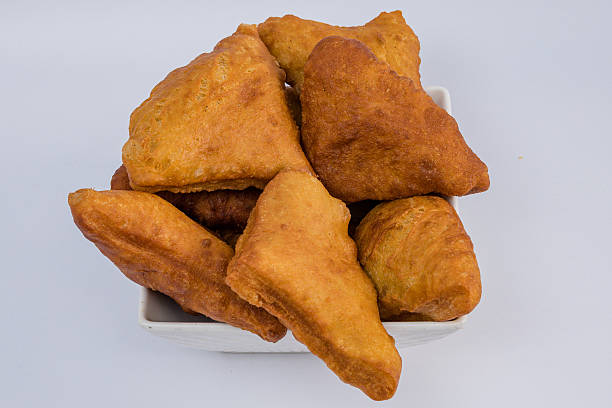

Mandazi Recipe

Mandazi are fluffy, triangular doughnuts with a hint of cardamom.
They are slightly sweet, golden brown, and perfect with tea or as a snack.
A must-have for Kenyan teatime.
Ingredients
- 3 cups all-purpose flour
- 1/2 cup sugar
- 1 teaspoon baking powder
- 1/2 teaspoon ground cardamom
- 1 egg
- 3/4 cup coconut milk (or regular milk)
- 2 tablespoons margarine or butter
- Oil for deep frying
Steps
- Mix flour, sugar, baking powder, and cardamom in a bowl.
- Add butter, egg, and milk, knead into soft dough.
- Let the dough rest for 30 minutes.
- Roll out and cut into triangles.
- Deep fry until golden brown, then drain excess oil.
Enjoy mandazi fresh and warm, or store in an airtight container for later.
← Back to Home